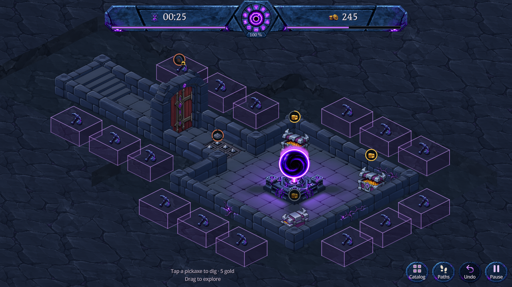

Le recul est maintenant partagé par les cubes d’une même rangée ou colonne. Un cube situé dans un angle ne se décale plus latéralement dans son voisin. Leurs dimensions restent identiques et le dégagement autour du donjon reste de 1,20 case.

Capture Godot · 1280 × 720 · Après correction
La comparaison ci-dessus change aussi ce détail. Voir après un creusement · Voir l’appui.
Le contrôle reproduisait deux intersections de 0,04 case entre les cubes voisins du couloir : rapport avant correction. Le placement commun supprime ces intersections sans réduire les volumes ni changer la grille logique.
Contrôle géométrique : toutes les paires de cubes du donjon d’essai, puis 24 creusements réellement effectués et leurs 24 annulations, avec la graine 241025. Aucun volume ne se pénètre dans ces états. 337 vérifications natives conservent les dimensions historiques, les appuis sur le dessus et les côtés, le prix, le déplacement de caméra, le terrain et l’annulation. 7 contrôles visuels confirment que les pixels opaques de maçonnerie ne sont pas recouverts dans trois formats. Les occultations normales de la projection isométrique restent possibles ; elles ne sont pas des intersections de volumes.
Scène isolée DigBlocksPreview.tscn, sans sauvegardes joueur. Reproduction : godot --headless --path . --script res://tools/verify_dig_block_spacing.gd, puis les outils natifs verify_dig_clearance.gd et capture_dig_blocks.gd. Le jeu principal conserve sa présentation actuelle. Ces tests ne couvrent pas toutes les cartes possibles ; pas de validation sur téléphone physique.